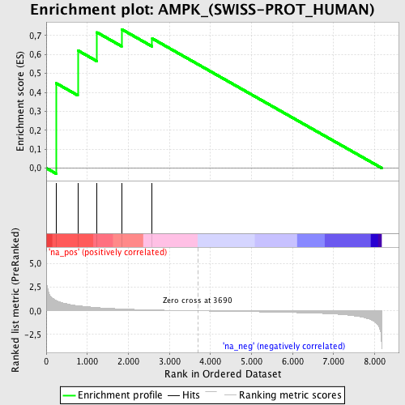
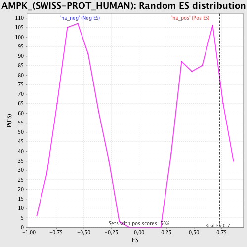

| | | Dataset | 52288 |
| Phenotype | NoPhenotypeAvailable |
| Upregulated in class | na_pos |
| GeneSet | AMPK_(SWISS-PROT_HUMAN) |
| Enrichment Score (ES) | 0.7332981 |
| Normalized Enrichment Score (NES) | 1.2918924 |
| Nominal p-value | 0.17234468 |
| FDR q-value | 0.55773443 |
| FWER p-Value | 1.0 |
Table: GSEA Results Summary

Fig 1: Enrichment plot: AMPK_(SWISS-PROT_HUMAN)
Profile of the Running ES Score & Positions of GeneSet Members on the Rank Ordered List

Fig 2: AMPK_(SWISS-PROT_HUMAN): Random ES distribution
Gene set null distribution of ES for AMPK_(SWISS-PROT_HUMAN)